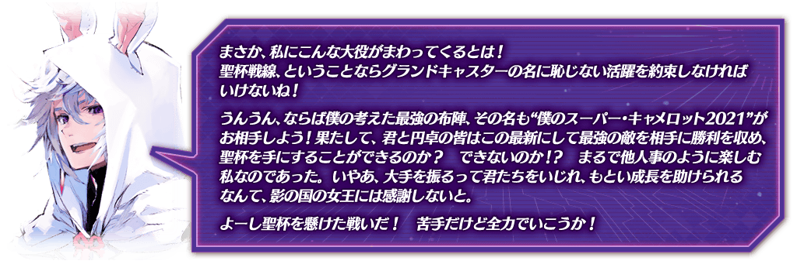

新聖杯戰線開幕！舉辦期間限定活動「聖杯戰線 ～我的超級卡美洛2021～」！
本活動中，會逐日開放「聖杯戰線」，分成敵我方的御主與從者，於専用的戰鬥場地反覆戰鬥，爭奪勝敗。
勝利後可入手1個聖杯之滴，收集7個的話能交換聖杯，取勝所有的戰鬥，以聖杯的獲得為目標吧！
※本頁面皆為開發中圖片。會有與實際圖片相異的情況。
◆活動舉辦期間◆
2021年5月12日(三) 17:00～5月26日(三) 11:59
◆活動參加條件◆
滿足以下條件的御主才能參加
・通過「特異點F 炎上汙染都市 冬木」
期間限定活動「聖杯戰線 ～我的超級卡美洛2021～」的聖杯戰線，關於自上次舉辦的期間限定活動「聖杯戰線 ～還有你嗎，布魯圖斯～」進行下述的內容調整。
・修改成在玩家回合時也會顯示敵人行動次數
聖杯戰線的戰鬥中，修改成在玩家回合時也會顯示敵從者及敵御主的行動次數。
・在從者的圖示顯示Lv.
聖杯戰線的戰鬥中，在我方從者、支援從者、敵從者的圖示及數值UI，變得會顯示容易理解強度的「Lv.」。
・從者的數值UI修改
修改點擊從者圖示後顯示的從者數值UI。透過修改，在數值畫面追加「詳細」鍵。點擊「詳細」鍵的話，變得可確認更詳細的數值和狀態變化。
・聖杯戰線的通過修改成為每日任務的對象
通過聖杯戰線時，變得會計算在每日任務的「通過關卡〇次」。
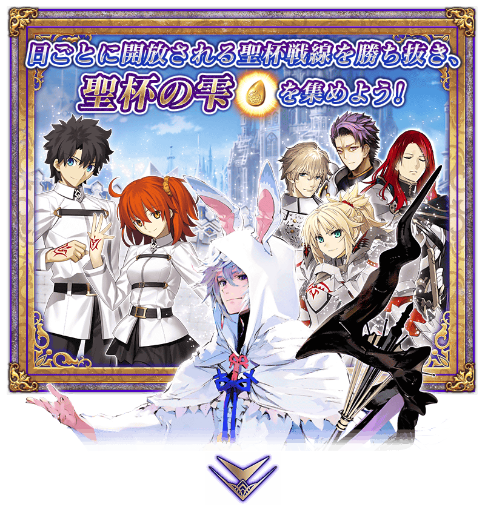
 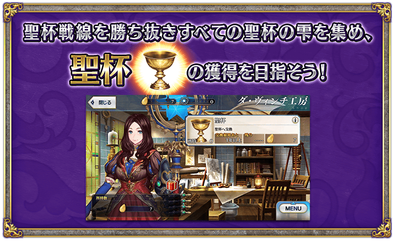
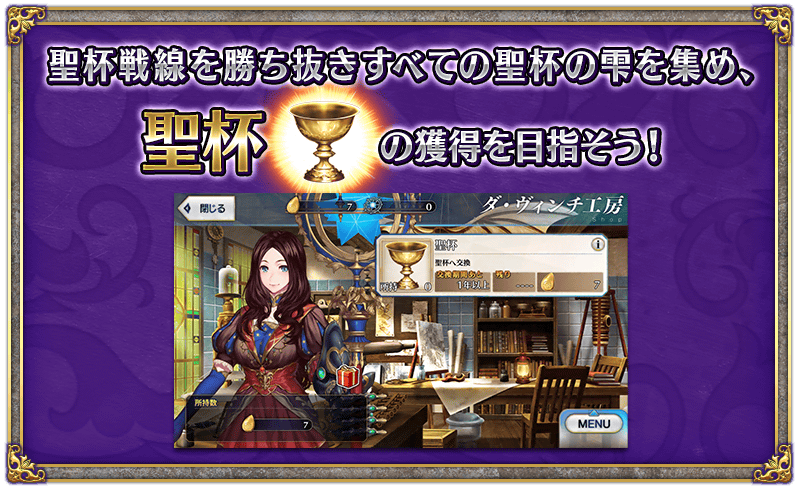

本活動中，「聖杯戰線」將會逐日開放。
聖杯戰線是分成敵我方的御主與從者，於専用的戰鬥場地反覆戰鬥，爭奪勝敗。勝利後可入手聖杯之滴1個，收集7個的話能交換聖杯，取勝所有的戰鬥，以聖杯的獲得為目標吧！
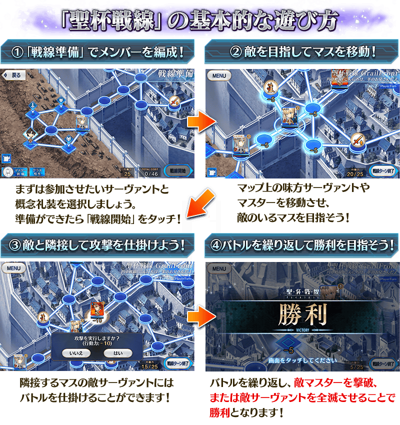
【聖杯戰線開放時間表】
| 聖杯戰線開放時間 | 開放的聖杯戰線 |
|---|---|
| 2021年5月12日(三) 17:00～ 5月26日(三) 11:59 |
聖杯戰線 第一戰 |
| 2021年5月13日(四) 17:00～ 5月26日(三) 11:59 |
聖杯戰線 第二戰 |
| 2021年5月14日(五) 17:00～ 5月26日(三) 11:59 |
聖杯戰線 第三戰 |
| 2021年5月15日(六) 17:00～ 5月26日(三) 11:59 |
聖杯戰線 第四戰 |
| 2021年5月16日(日) 17:00～ 5月26日(三) 11:59 |
聖杯戰線 第五戰 |
| 2021年5月17日(一) 17:00～ 5月26日(三) 11:59 |
聖杯戰線 第六戰 |
| 2021年5月18日(二) 17:00～ 5月26日(三) 11:59 |
聖杯戰線 第七戰 |
※聖杯戰線可獲得的通過報酬、戰利品、御主EXP、魔術禮裝EXP、絆點數只限初次通過時。 ※聖杯戰線的通過不包含在每日任務「通過關卡〇次」以外的任務達成條件。 ※開放的聖杯戰線能以任意的順序遊玩。 ※敬請注意聖杯戰線開戰的情況，該戰鬥結束前無法「強化」「召喚」等聖杯戰線以外的事情(戰鬥的途中選擇「戰線脫離」也可回到聖杯戰線的選擇畫面，但聖杯戰線會重置)。 ※請注意選擇「戰線脫離」回到聖杯戰線的選擇畫面的情況，不會退回在聖杯戰線開始時消耗的AP。
在聖杯戰線的各戰鬥中在各關卡固有的支援從者變得會登場。
支援從者是與玩家編成部隊另外配置在地圖的我方從者，支援從者的編成COST不包含在TOTAL COST。
支援從者能讓玩家操控，配合自身編成的部隊行動。將戰局導向有利吧！
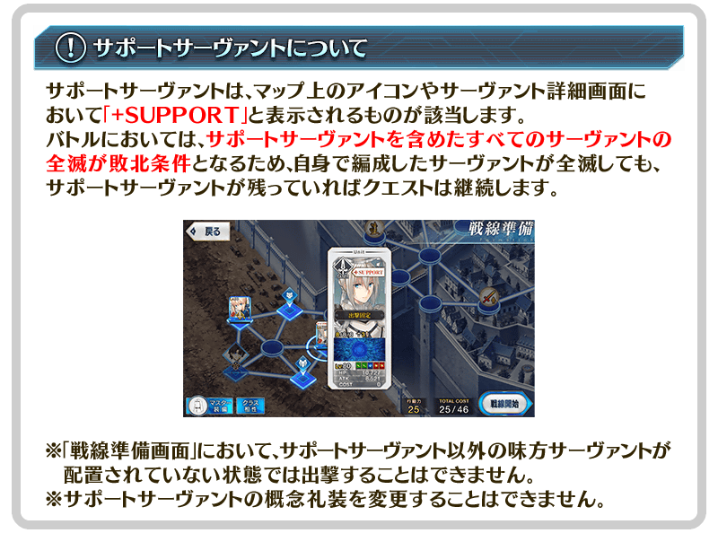
在聖杯戰線的地圖，追加取得後可獲得各式各樣報酬的「寶箱」！
「寶箱」會配置在地圖上的格子，我方從者及御主滯留在「寶箱」的格子就可取得。
取得的「寶箱」報酬，在聖杯戰線勝利後就可獲得。因此，請注意進行「戰線脫離」時時就算取得「寶箱」也無法獲得報酬。
另外，「寶箱」會有稀有度的差異，高稀有度的「寶箱」可獲得豪華的報酬。
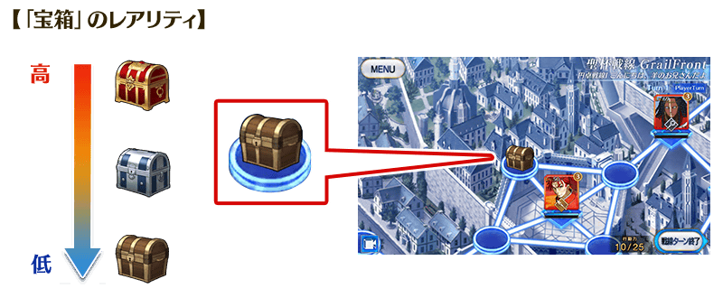
※可獲得的「寶箱」報酬只限1次。取得「寶箱」後通過關卡，再挑戰同關卡時不會顯示「寶箱」。 ※未取得「寶箱」就通過關卡，再挑戰同關卡時，可取得顯示的「寶箱」。 ※取得「寶箱」的狀態下進行「戰線脫離」的情況，再度挑戰關卡的話，可再次取得「寶箱」。 ※敵從者及敵御主滯留在「寶箱」的話，無法奪走「寶箱」。
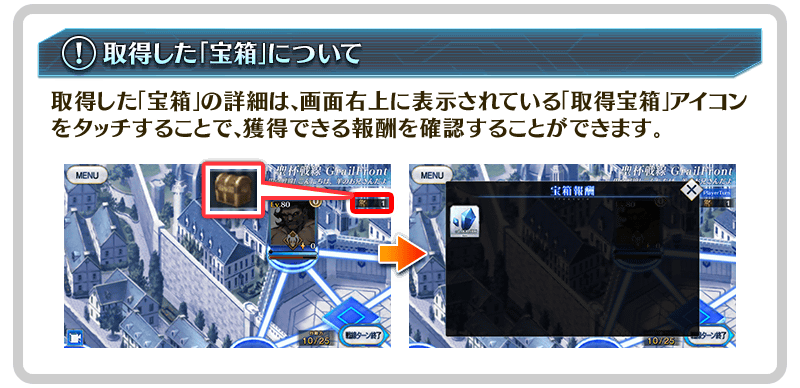
聖杯戰線的戰鬥中，比平常的敵從者更強力從者「強敵」會登場。
集結我方從者之力以打倒「強敵」為目標吧！
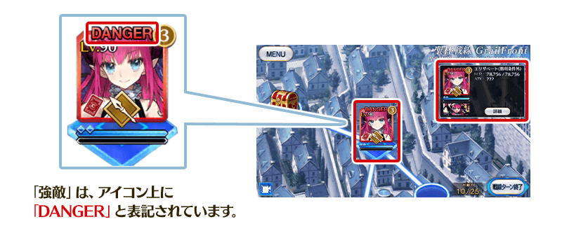
※強敵的撃破，不包含在聖杯戰線的勝利條件。 ※請注意全撃破強敵以外的敵從者的時間點，聖杯戰線便會勝利。
在2020年舉辦的特別活動「復刻版:Apocrypha/Inheritance of Glory -Triumphal-」中登場的「★5(SSR)莫德雷德(Saber)」的靈衣「圖里法斯的記憶」開放權追加到達文西工房的「稀有稜鏡交換」！
用稀有稜鏡5個交換後，可入手上述靈衣開放權。
另外，想要靈衣開放的話，除了靈衣開放權外必須再加上一些開放條件。
◆追加時間◆
2021年5月12日(三) 17:00～
◆交換條件◆
滿足以下條件的御主才能交換
・通過「第一特異點 邪龍百年戰爭 奧爾良」
・未入手靈衣「圖里法斯的記憶」開放權
※追加到「稀有稜鏡交換」的靈衣「圖里法斯的記憶」開放權為永久，沒有交換期限。 ※關於已經獲得交換對象靈衣開放權的玩家，無法交換。
◆有關靈衣開放權的注意◆
※本次追加的「★5(SSR)莫德雷德(Saber)」靈衣，會配合外觀變化一部份語音。
※請注意未持有「★5(SSR)莫德雷德(Saber)」的情況，可入手靈衣開放權。但無法進行靈衣開放。
※2021年5月17日(一) 12:00以後，永久的靈衣開放權交換會在「達文西工房」新開放的「靈衣縫製」進行。
◆追加道具(永久)◆
| 追加道具 | 能交換可能次數 | 1次交換所需的 稀有稜鏡數 |
|---|---|---|
| 靈衣「圖里法斯的記憶」開放權 | 1次 | 5個 |
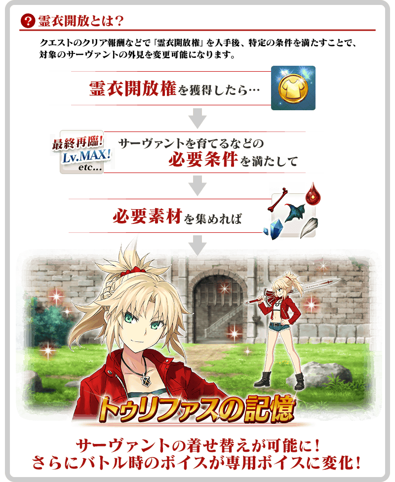

「靈衣開放」是自強化畫面進行。
※「靈衣開放」後會自動切換戰鬥角色和圖示。若想回到「靈衣開放」前的狀態和變成其他再臨階段的情況，可自從者詳細畫面變更。 ※進行「靈衣開放」不會讓職階和能力等有所變化。
介紹開放靈衣「圖里法斯的記憶」的「★5(SSR)莫德雷德(Saber)」寶具演出！
「★5(SSR)阿爾托莉亞・潘德拉剛(Lancer)」「★4(SR)高文」「★4(SR)蘭斯洛特(Saber)」「★4(SR)崔斯坦」的戰鬥動作及寶具演出翻新！
另外，伴隨對一部份裝置全螢幕顯示的對應，4位的寶具演出也對應到全螢幕顯示。
◆翻新實施時間◆
2021年5月12日(三) 17:00～
【★5(SSR)阿爾托莉亞・潘德拉剛(Lancer)】
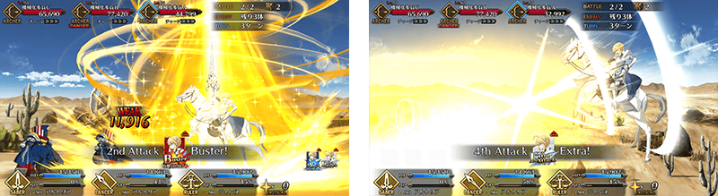
【★4(SR)高文】
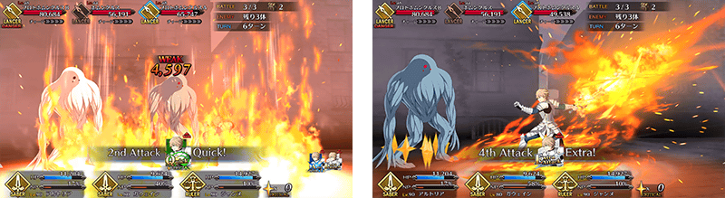
【★4(SR)蘭斯洛特(Saber)】
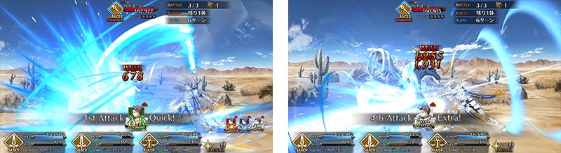
【★4(SR)崔斯坦】
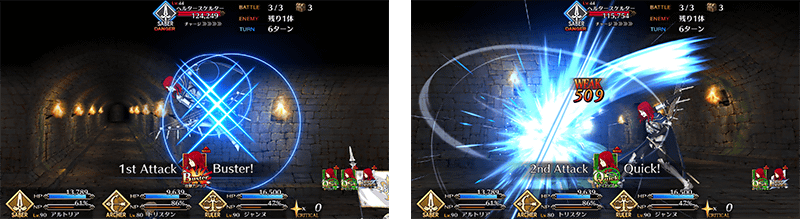
強化「★5(SSR)阿爾托莉亞・潘德拉剛(Lancer)」「★4(SR)崔斯坦」的特別關卡「從者強化關卡」，在迦勒底之門永久追加。
不僅進行對象從者的強化，也可獲得聖晶石做為關卡通過報酬。
※請注意在從者強化關卡沒有文字冒險部份。
◆追加時間◆
2021年5月12日(三) 17:00～
◆開放條件◆
持有的強化對象從者，必須使其最終再臨。
※未持有對象從者的話，不會出現關卡。
※關卡沒有舉辦期限。
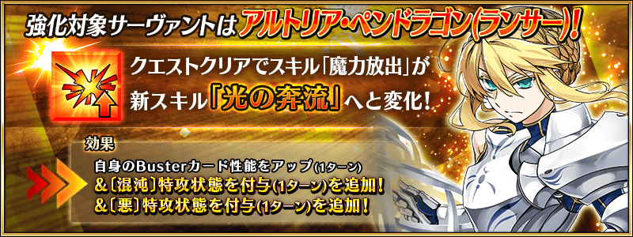 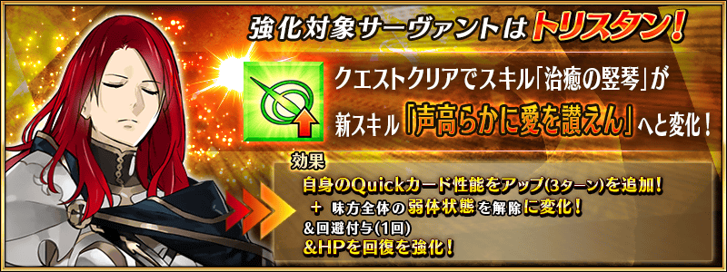
其他還有，期間限定「聖杯戰線 ～我的超級卡美洛2021～Pick Up召喚(每日交替)」同時舉辦！
關於詳情，請自下述橫幅確認。
■「聖杯戰線 ～我的超級卡美洛2021～Pick Up召喚(每日交替)」詳細情報